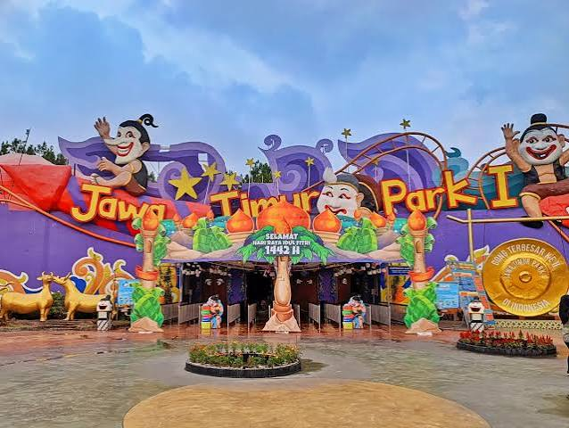

Jatim Park 1
Kota Batu, Jawa Timur

Tentang Jatim Park 1
Jatim Park 1 merupakan destinasi wisata rekreasi di Kota Batu yang memadukan permainan, hiburan, dan unsur pembelajaran. Tempat ini cocok untuk pengunjung yang ingin menikmati kegiatan bersama keluarga atau teman.
Selain wahana permainan, Jatim Park 1 juga dikenal dengan area edukasi yang memperkenalkan berbagai pengetahuan melalui pengalaman yang menarik dan interaktif.
Informasi Singkat
- Lokasi: Kota Batu, Jawa Timur
- Jenis wisata: Taman rekreasi dan edukasi
- Cocok untuk: Keluarga, pelajar, dan kelompok teman
- Kegiatan: Menikmati wahana, menjelajahi area edukasi, dan berfoto
Daya Tarik
- Berbagai wahana permainan untuk pengalaman rekreasi.
- Area edukasi yang menggabungkan hiburan dengan pengetahuan.
- Tempat untuk menghabiskan waktu bersama keluarga dan teman.
- Beragam sudut menarik untuk berfoto.
Tips Berkunjung
- Periksa informasi tiket dan jam operasional sebelum berangkat.
- Gunakan pakaian dan alas kaki yang nyaman.
- Perhatikan ketentuan tinggi badan dan keselamatan setiap wahana.
- Siapkan waktu yang cukup agar dapat menikmati area pilihan.